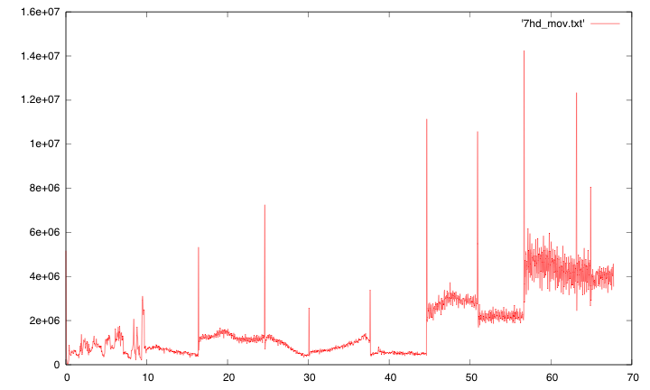
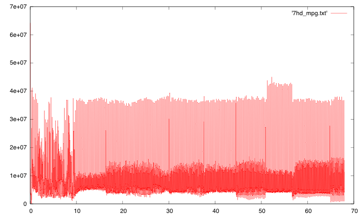

Produces an ASCII file suitable for plotting in gnuplot of the bitrate per frame. Also includes a rolling average algorithm that helps smooth out differences between I frame, P frame and B frames. Constant bitrate is not so constant. Requires about 50 frames rolling average window to get an idea of the average bitrate.
using a post processing tool such as octave to average the graph may be useful
VBR example 
CBR example 